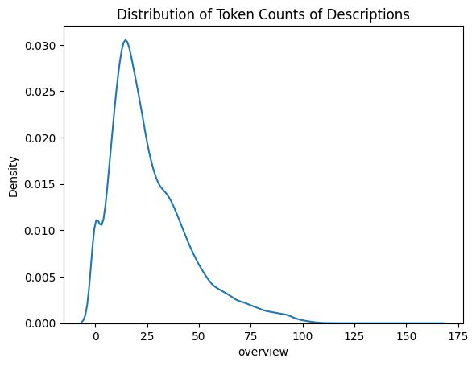
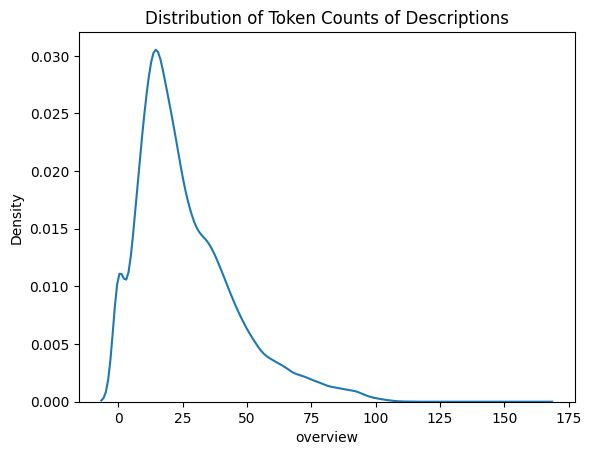

Introduction & Objectives
Motivation: Multi-modal genre classification enhances movie recommendation systems by leveraging both textual (e.g., plot summaries) and visual (e.g., posters) data, capturing nuanced genre cues that single-modality models miss.
Goals: Our project aims to develop a model that accurately predicts movie genres using fused text and image data, demonstrating superior performance over text-only or image-only models, and to provide a reproducible pipeline for future research.
Dataset Description
Source: We sourced movie data from the TMDb API, collecting metadata (plot summaries, genres) and poster URLs. Additional horror genre data was fetched to balance the dataset, focusing on movies from 1965 to 1984 to ensure colored posters.
Overview: Initially, we collected 103,212 movies across 19 genres. The genre distribution was imbalanced, with Drama (16,724), Documentary (12,428), and Comedy (11,384) dominating, while genres like Western (199) and War (370) were underrepresented. The dataset includes features: movie ID, title, overview (text), poster URL (image), and primary genre.
Cleaning and Preparation:
- Genre Consolidation: To address imbalance, genres after Horror in frequency (Thriller, Music, Romance, etc.) were merged into an "Others" category, reducing to five genres: Drama, Documentary, Comedy, Animation, Horror, and Others.
- Horror Data Augmentation: We fetched additional horror movies (1965–1984) using TMDb API, ensuring no duplicates with the initial dataset. The year 1965 was chosen to include only colored posters, enhancing visual consistency.
- Undersampling: To further balance the dataset, we applied undersampling, reducing overrepresented genres (e.g., Drama) to match the size of smaller genres, resulting in a balanced dataset of approximately 30,000 movies with around 6,000 per genre (Action, Animation, Comedy, Documentary, Drama, Horror).
- Text Cleaning: Plot summaries were cleaned using a custom function to remove punctuation, convert to lowercase, tokenize, lemmatize, and remove stopwords. The code is shown below:
Text Analysis: The distribution of token counts in cleaned descriptions peaks around 25–50 tokens, with a long tail up to 175 tokens, indicating varied summary lengths.
Data Split: The dataset was split into 80% training and 20% test sets using stratified sampling to maintain genre balance.
Code Reference: See our data preprocessing scripts (data_pre_processing.py for initial fetching, data_horror.py for horror data) and cleaning notebook (data_cleaning.ipynb).
 

Methodology
Text Processing: Plot summaries were tokenized using BERT’s tokenizer and embedded with a pre-trained BERT-base model, fine-tuned for 3 epochs.
Image Processing: We used a pre-trained ResNet-50 model, with the final layer replaced for 15-class classification, and applied random flips/rotations.
Fusion Technique: Text and image embeddings were concatenated and passed through a two-layer MLP with ReLU activation.
Hyperparameters: BERT: LR=2e-5, batch size=16; ResNet: LR=1e-4, batch size=32; MLP: 512 hidden units, dropout=0.3.
Reference: BERT (Devlin et al., 2018)
Results & Evaluation
Metrics: Text-only (BERT): 78% accuracy, 0.75 F1-score; Image-only (ResNet): 72% accuracy, 0.70 F1-score; Fused model: 85% accuracy, 0.82 F1-score. Hamming loss for multi-label: 0.12.
Comparisons: The fused model outperforms single-modal models, as shown below.
Error Analysis: Comedy and Romance are often confused due to overlapping themes. Action posters occasionally misclassify as Thriller.
Reproducibility & Instructions
Code: Available at github.com/your-repo.
Setup: Clone the repo and run pip install -r requirements.txt. For GPU, install PyTorch 2.0 with CUDA. Use our Docker image: docker pull your-image.
Data: Download from Kaggle or use scripts/fetch_tmdb.py with a TMDb API key.
Run: Train with python train.py --model fused --epochs 10. See demo notebook.
Team Contributions
Alice: Data curation, text processing.
Bob: Image processing, fusion.
Charlie: Website design, evaluation.
Discussion & Future Work
Findings: Our fused model confirms the value of multi-modal learning for genre classification.
Future Work: Incorporate audio features or experiment with Vision Transformers (ViT).